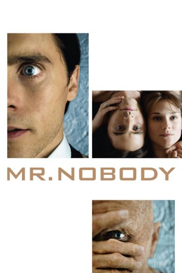
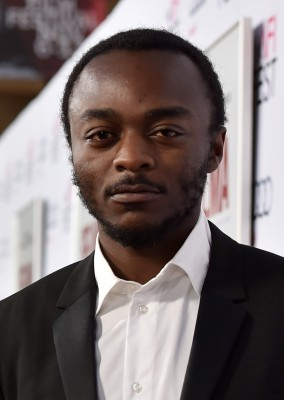

#8131 Mr. Nobody
 
 IMDB-Wertung: 7.9 / 10
IMDB-Wertung: 7.9 / 10  Metascore: 0
Metascore: 0 
In the year 2092, one hundred eighteen year old Nemo is recounting his life story to a reporter. He is less than clear, often times thinking that he is only thirty-four years of age. But his story becomes more confusing after he does focus on the fact of his current real age. He tells of his life at three primary points in his life: at age nine (when his parents divorced), age sixteen and age thirty-four. The confusing aspect of the story is that he tells of alternate life paths, often changing course with the flick of a decision at each of those ages. One life path has him ultimately married to Elise, a depressed woman who never got over the unrequited love she had for a guy named Stefano when she was a teenager and who asked Nemo to swear that when she died he would sprinkle her ashes on Mars. A second life path has him married to Jean. Their life is one of luxury but one also of utter boredom. And a third life path has him in a torrid romance with his step-sister Anna, the two who,...
Jahr: 2009
Dauer: 141 Minuten
FSK: 12
Land: Belgien Studio: Concorde FilmverleihTonspuren: DTS - ,
Untertitel:
Auflösung: 720p (1280x544) Größe: 7536 MB
Genre: Drama, Sci-Fi, Fantasy, Liebe
Regisseur: Jaco Van Dormael
Drehbuch: Jaco Van Dormael
Soundtrack: Pierre van Dormael
Darsteller:
 Jared Leto als Nemo Adult / Old Nemo
Jared Leto als Nemo Adult / Old Nemo Sarah Polley als Adult Elise
Sarah Polley als Adult Elise Diane Kruger als Anna Adult
Diane Kruger als Anna Adult- Linh Dan Pham als Adult Jean
 Rhys Ifans als Father Nemo
Rhys Ifans als Father Nemo Natasha Little als Mother Nemo
Natasha Little als Mother Nemo- Toby Regbo als Nemo age 15
 Juno Temple als Anna age 15
Juno Temple als Anna age 15- Clare Stone als Elise age 15
- Thomas Byrne als Nemo age 9
 Allan Corduner als Dr. Feldheim
Allan Corduner als Dr. Feldheim Daniel Mays als Young Journalist
Daniel Mays als Young Journalist- Michael Riley als Harry
- Pascal Duquenne als Henry
 David Schaal als Thug 1
David Schaal als Thug 1 Laurent Capelluto als Man in Black
Laurent Capelluto als Man in Black- Andrew Simms als Showroom Man
- Juliette Van Dormael als Angel of Oblivian 2
- Tedd Dillon als Texan Man
-  Marc Zinga als Gay Man 1
- Martin Swabey als Gay Man 2
 Serge Larivière als Shoe Lace Supplier
Serge Larivière als Shoe Lace Supplier- Ben Mansfield als Stefano 22-40
- Jaco Van Dormael als Brazilian Man
- Pierre Chaves als Hotel Entrance Guard
- Nicholas Beveney als Black Man Airport
 David Kennedy als Thug 2
David Kennedy als Thug 2 Carlo Mestroni als Police Officer
Carlo Mestroni als Police Officer- John Churchill als Boy on Slide
 Clayton Nemrow als (scenes deleted)
Clayton Nemrow als (scenes deleted)- Victor Frolov als Man in suite (uncredited)
- Audrey Giacomini als Jean age 15
- Laura Brumagne als Anna age 9
- Harold Manning als TV Host
- Emily Tilson als Eve
- Roline Skehan als Joyce
- Anders Morris als Noah
- Noa De Costanzo als Nemo age 5
- Nathan Boydell als Paul
- Harry Cleven als Man in Black 2
- Vincent Dupont als Michael
- Jenna Wheeler-Hughes als Showroom Girl
- Valérie-Marie Chadelaud als Showroom Woman
- Stéphane Thiry als Male Nurse
- Bruno Verstraete als Male Nurse
- Alice van Dormael als Angel of Oblivian 1
- Melanie Doerr als Texan Woman
- Talya Rubin als Shy Woman
- Vito DeFilippo als Shy Man
- Corey Cleve Bentivegna als Boy of Shy Couple
Datei: X:\2009(G-M)\Mr. Nobody (2009, FSK12, 1280x544).mkv seit 30.01.2018
Festplatte: HD 2009(G-Z)-2010(A-F)
 Es gibt insgesamt 82 Filme in der Gruppe '2009(G-M)'
Es gibt insgesamt 82 Filme in der Gruppe '2009(G-M)'